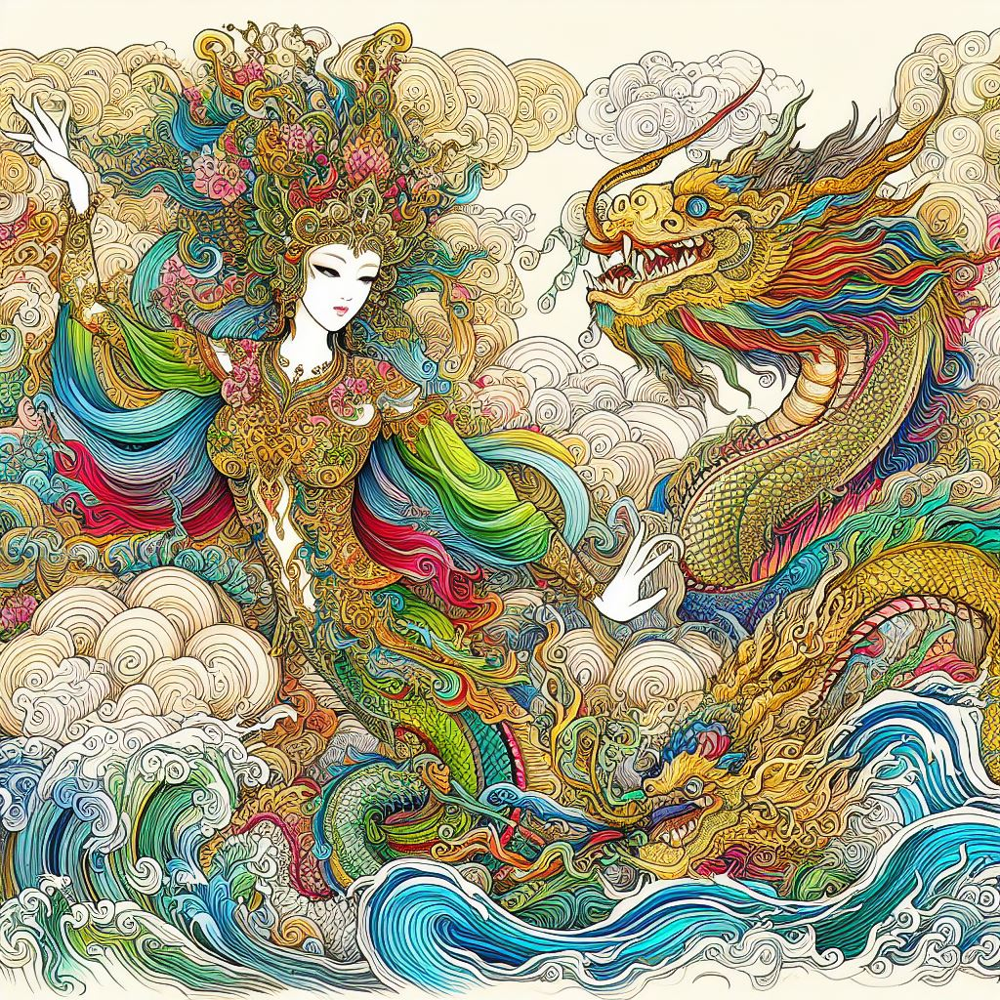
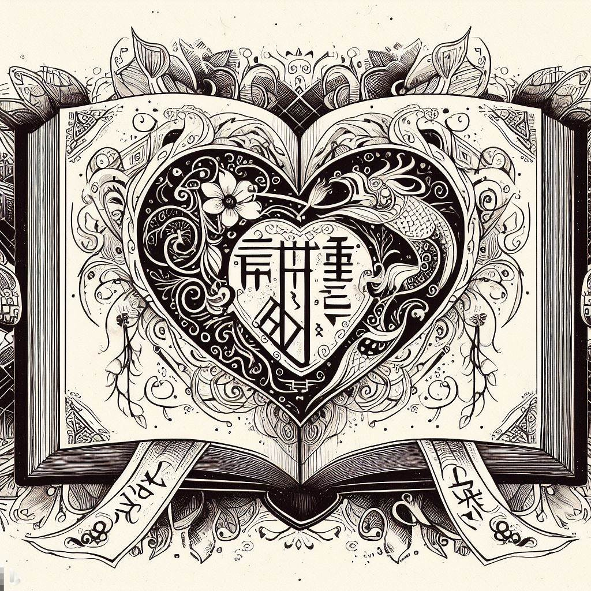

-The Legend of Au Co and Lac Long Quan-
A zine by Catherine Thy Lê. December 2023.
About the Project
_This zine illustrates the Vietnamese folktale of the orgins of the Vietnamese people. They come from the bloodline of Lac Long Quan and Au Co, a sea dragon king and forest fairy goddess. There are many different renditions of the folktale, this is simply the one I chose to illustrate. This zine was made using AI generated images from Bing Dall E 3 and compositied and edited by me with Adobe Photoshop. The look of this zine is a play on the traditioonal fine line art style seen in Asian artwork and contrasating it with my love for graphic, colorful, and maximalist design elements. The zine exists as a final product as a 8.5 in. x 11 in. zine (16 in. x 11 in. when laying open flat) with additional smaller zines (5.5 in. x 8.5 in.)._
_Overall, I think this project is a successful bridge of human labor and AI generation to be used in the storytelling of different cultures. As a Vietnamese American myself, I am interested in this subject matter. I think it was interesting to take a step back from being the artist that creates images and assets for the zine from scratch and to shape AI to create what I envisioned through my promp design. Through this zine, I focused more on being the graphic designer and was able to transform the AI generated images through my own design styles, aesthetics, and interests._
Project Images (Final Zine Spread)


Zine Composition Sketch/Brainstorm

Original Images Generated Through Bing Dall E 3
 